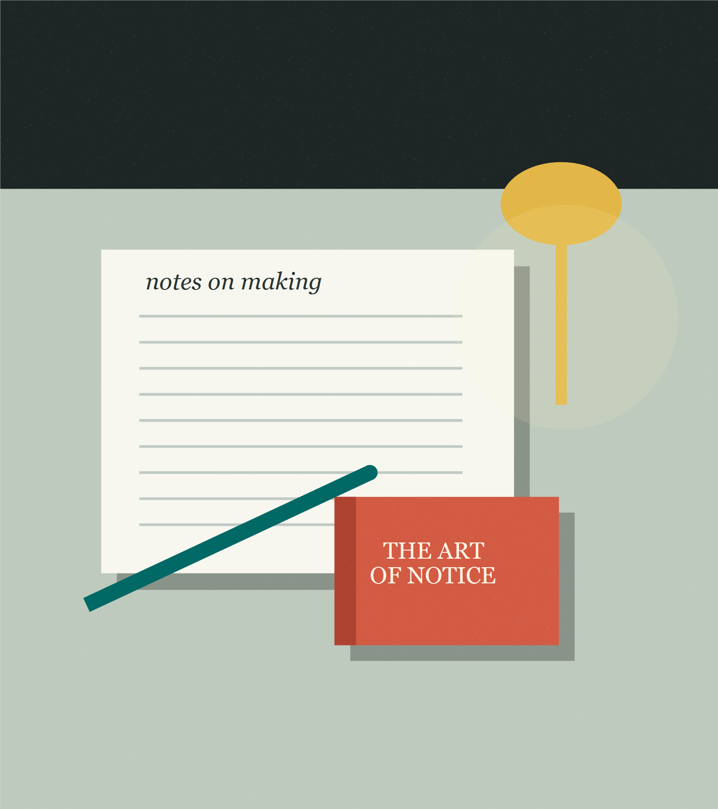

LIN MO / NOTES ON MAKING
把日常的困惑，
慢慢写成答案。
我是空白，一名独立写作者与产品设计师。在这里记录创作过程、技术实践、阅读片段，以及值得反复琢磨的生活。

01 / FEATURED
此刻值得停留的文章
02 / WRITING
最近写作
没有找到匹配的文章。试试换一个关键词或分类。
03 / ABOUT
LIN MO / NOTES ON MAKING
我是空白，一名独立写作者与产品设计师。在这里记录创作过程、技术实践、阅读片段，以及值得反复琢磨的生活。

01 / FEATURED
02 / WRITING
没有找到匹配的文章。试试换一个关键词或分类。
03 / ABOUT